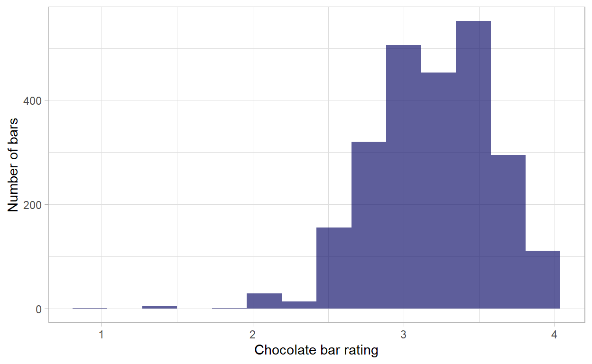
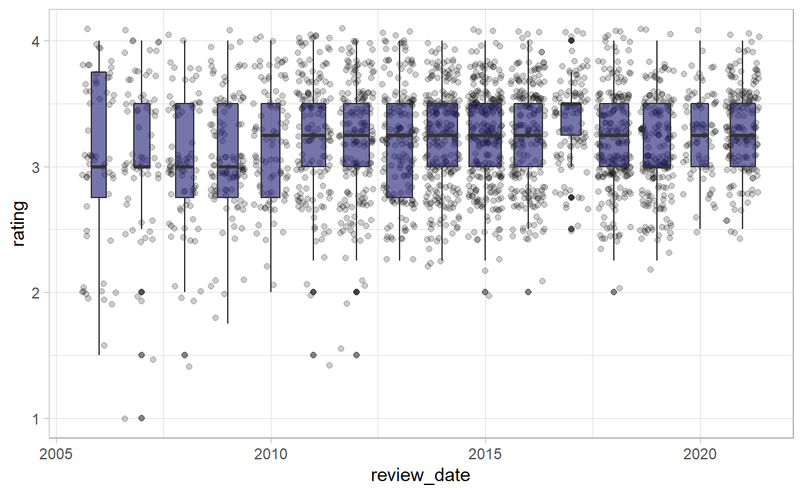
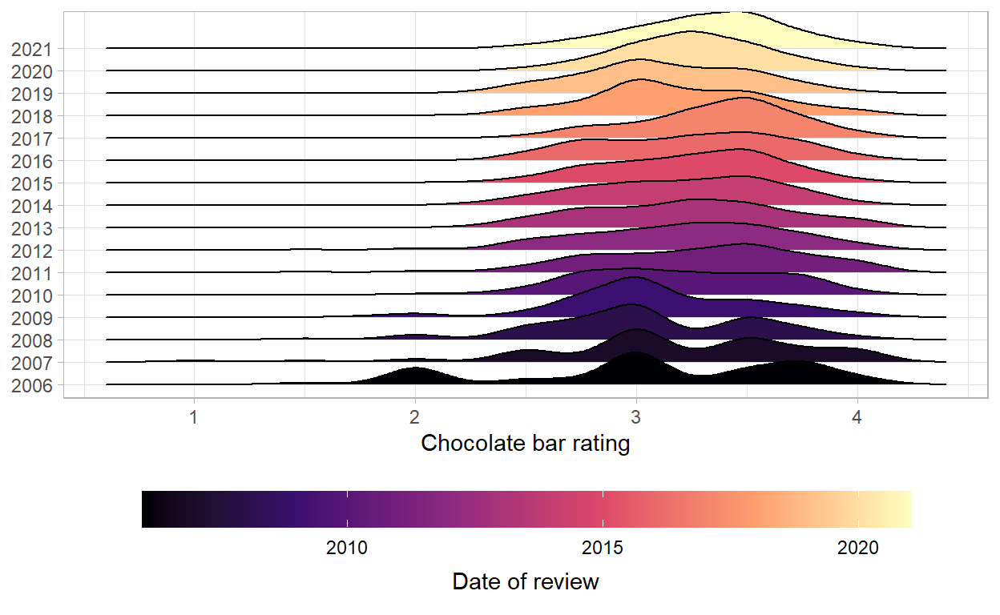
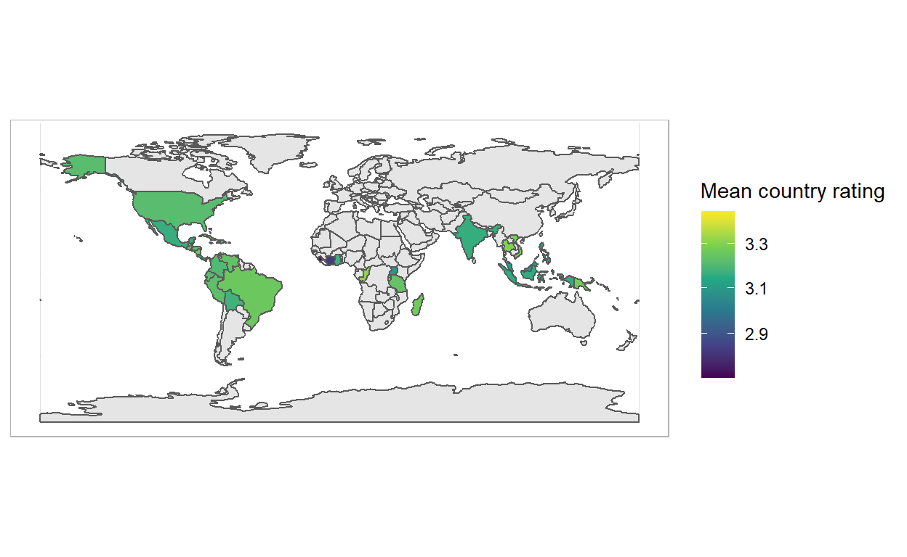
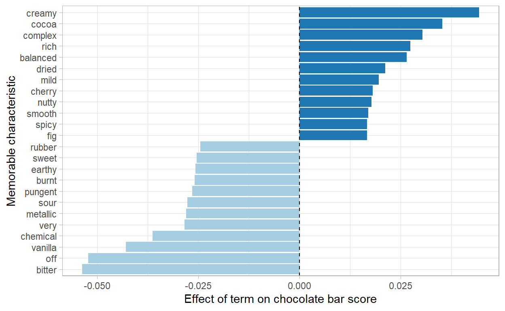

Flavours of Cocoa
Welcome to the first in a series of data screencasts where I attempt to show you how great the R language is.
This post follows along with the data screencast and includes the code methodically.
It begins by reading in the data, then tidying it up, analysing it, making some visualizations and then performing some predictive modelling.
Beans?
Im signed up to a fantastic newsletter called Data is Plural curated by journalist Jeremy Singer-Vine. Truly, it is a treasure trove of interesting public datasets from all over the internet. You can sign up to the newsletter here if this sounds up your alley.
This week it included a link to a fun selection of chocolate bar reviews, which Jeremy described as:
Chocolate bar reviews. The Manhattan Chocolate Societys Brady Brelinski has reviewed 2,500+ bars of craft chocolate since 2006, and compiles his findings into a copy-paste-able table that lists each bars manufacturer, bean origin, percent cocoa, ingredients, review notes, and numerical rating.
A live link to the database is shown below.
knitr::include_url("http://flavorsofcacao.com/chocolate_database.html")
Ingest the data
Ive copied and pasted the data into an Excel spreadsheet, accessible on my Github if you want to download it an analyse it yourself.
To begin the analysis, well read in the Excel file using the
readxl package, and the here package that
helps us with file paths.1
We dont need to load the packages via the
library(readxl) command because were only going to use
them once or twice. Instead we can call the name of the package followed
by two colons and the command, as shown below.
library(tidyverse)
theme_set(theme_light())
# read in the data
df <- readxl::read_excel(here::here("_posts",
"2022-01-17-flavours-of-cocoa",
"data",
"chocolate-bar-ratings.xlsx"))
# display the first six rows of tibble
head(df)
# A tibble: 6 x 10
REF `Company (Manufacturer)` `Company Location` `Review Date`
<dbl> <chr> <chr> <dbl>
1 2454 5150 U.S.A. 2019
2 2458 5150 U.S.A. 2019
3 2454 5150 U.S.A. 2019
4 2542 5150 U.S.A. 2021
5 2546 5150 U.S.A. 2021
6 2546 5150 U.S.A. 2021
# ... with 6 more variables: `Country of Bean Origin` <chr>,
# `Specific Bean Origin or Bar Name` <chr>, `Cocoa Percent` <dbl>,
# Ingredients <chr>, `Most Memorable Characteristics` <chr>,
# Rating <dbl>This gives us a tibble (similar to a dataframe) with 10
columns (4 numeric and 6 character) and 2,530 individual reviews.
The column names are a big ugly though:
[1] "REF"
[2] "Company (Manufacturer)"
[3] "Company Location"
[4] "Review Date"
[5] "Country of Bean Origin"
[6] "Specific Bean Origin or Bar Name"
[7] "Cocoa Percent"
[8] "Ingredients"
[9] "Most Memorable Characteristics"
[10] "Rating" We can use the janitor package to make the column names snake case (lower case with words separated by an underscore).
# clean names
df <- df %>%
janitor::clean_names()
# show names again
df %>% colnames()
[1] "ref"
[2] "company_manufacturer"
[3] "company_location"
[4] "review_date"
[5] "country_of_bean_origin"
[6] "specific_bean_origin_or_bar_name"
[7] "cocoa_percent"
[8] "ingredients"
[9] "most_memorable_characteristics"
[10] "rating" Now that we have a nice tibble with clean names, we can
ask what the data itself looks like. There are many ways to get summary
statistics of a dataset. I love the skim function from the
skimr package.
# skim the dataset
skimr::skim(df)
| Name | df |
| Number of rows | 2530 |
| Number of columns | 10 |
| _______________________ | |
| Column type frequency: | |
| character | 6 |
| numeric | 4 |
| ________________________ | |
| Group variables | None |
Variable type: character
| skim_variable | n_missing | complete_rate | min | max | empty | n_unique | whitespace |
|---|---|---|---|---|---|---|---|
| company_manufacturer | 0 | 1.00 | 2 | 39 | 0 | 580 | 0 |
| company_location | 0 | 1.00 | 4 | 21 | 0 | 67 | 0 |
| country_of_bean_origin | 0 | 1.00 | 4 | 21 | 0 | 62 | 0 |
| specific_bean_origin_or_bar_name | 0 | 1.00 | 3 | 51 | 0 | 1605 | 0 |
| ingredients | 87 | 0.97 | 4 | 14 | 0 | 21 | 0 |
| most_memorable_characteristics | 0 | 1.00 | 3 | 37 | 0 | 2487 | 0 |
Variable type: numeric
| skim_variable | n_missing | complete_rate | mean | sd | p0 | p25 | p50 | p75 | p100 | hist |
|---|---|---|---|---|---|---|---|---|---|---|
| ref | 0 | 1 | 1429.80 | 757.65 | 5.00 | 802.0 | 1454.00 | 2079.00 | 2712 | |
| review_date | 0 | 1 | 2014.37 | 3.97 | 2006.00 | 2012.0 | 2015.00 | 2018.00 | 2021 | |
| cocoa_percent | 0 | 1 | 0.72 | 0.06 | 0.42 | 0.7 | 0.70 | 0.74 | 1 | |
| rating | 0 | 1 | 3.20 | 0.45 | 1.00 | 3.0 | 3.25 | 3.50 | 4 |
Great! Our reviews are almost all complete.
- Only 3 percent are missing information on the ingredients.
- The reviews begin in 2006, the mean review is from 2014, and the latest is from 2021.
- The percent of the bar comprising of cocoa ranges from 42 to 100, with a mean of 72.
- We have 62 unique countries of origin for the beans, and 67 countries of manufacture.
- There are 21 unique combinations of ingredients, comprising of seven elements in total.
Data cleaning and feature engineering
Lets have a look at that ingredients column.
# A tibble: 22 x 2
ingredients n
<chr> <int>
1 3- B,S,C 999
2 2- B,S 718
3 4- B,S,C,L 286
4 5- B,S,C,V,L 184
5 4- B,S,C,V 141
6 <NA> 87
7 2- B,S* 31
8 4- B,S*,C,Sa 20
9 3- B,S*,C 12
10 3- B,S,L 8
# ... with 12 more rowsSo we have a number of ingredients, a dash, and then a key for what the ingredients are. Consulting the website reveals that there are seven possible ingredients:
| key | value |
|---|---|
| B | Beans |
| S | Sugar |
| S* | Sweetener other than white cane or beet sugar |
| C | Cocoa Butter |
| V | Vanilla |
| L | Lecithin |
| Sa | Salt |
These key and value combinations are very sensible - if we have a lot of data we can save space by using the keys instead of the whole string. However, I would prefer to have them written out, because were going to split them into their own columns a little bit later.
We can use the str_replace_all function from the
stringr package to replace items in the list of ingredients
with names.
df <- df %>%
mutate(ingredients = str_replace_all(ingredients, c("Sa" = "salt",
# the * is a special character
# when writing Regex and so
# we use the two backslashes to
# "escape" the meaning
"S\\*" = "non_sugar_sweetener",
"B" = "beans",
"S" = "sugar",
"V" = "vanilla",
"L" = "lecithin",
"C" = "cocoa_butter"
)))
Lets look again at our ingredients column:
# A tibble: 22 x 2
ingredients n
<chr> <int>
1 3- beans,sugar,cocoa_butter 999
2 2- beans,sugar 718
3 4- beans,sugar,cocoa_butter,lecithin 286
4 5- beans,sugar,cocoa_butter,vanilla,lecithin 184
5 4- beans,sugar,cocoa_butter,vanilla 141
6 <NA> 87
7 2- beans,non_sugar_sweetener 31
8 4- beans,non_sugar_sweetener,cocoa_butter,salt 20
9 3- beans,non_sugar_sweetener,cocoa_butter 12
10 3- beans,sugar,lecithin 8
# ... with 12 more rowsFantastic! Now we have the number of ingredients, a dash, and then each ingredient by name in one column. Lets separate this information into two columns so that we can use the number of ingredients as a feature.
The separate function from the tidyr
package is made just for this purpose. It takes three arguments:
- the name of the column to separate.
- new column names corresponding to the number of elements.
- the separator between elements.
df <- df %>%
separate(col = ingredients,
into = c("n_ingredients", "ingredients"),
sep = "-") %>%
# parse_number looks for a number inside a character column and discards the rest
mutate(n_ingredients = parse_number(n_ingredients),
# str_squish removes whitespace around the elements in the ingredients column
ingredients = str_squish(ingredients))
df %>%
select(n_ingredients, ingredients)
# A tibble: 2,530 x 2
n_ingredients ingredients
<dbl> <chr>
1 3 beans,sugar,cocoa_butter
2 3 beans,sugar,cocoa_butter
3 3 beans,sugar,cocoa_butter
4 3 beans,sugar,cocoa_butter
5 3 beans,sugar,cocoa_butter
6 3 beans,sugar,cocoa_butter
7 3 beans,sugar,cocoa_butter
8 4 beans,sugar,cocoa_butter,lecithin
9 4 beans,sugar,cocoa_butter,lecithin
10 4 beans,sugar,cocoa_butter,lecithin
# ... with 2,520 more rowsNow we have a numeric column with the number of ingredints and a column called ingredients with each element separated by a comma.
Finally, lets break the ingredients from a comma separated list into
a binary variable for each ingredient. We can use the
recipes package that is part of the tidymodels
metapackage - a framework for doing statistical modelling in a tidy
manner.
First we break our ingredients into 6 columns. The problem we run into is that for bars that contain different ingredients, the order of the ingredients split into the columns is not constant.
# df <- df %>%
# separate(ingredients, into = c(paste0("ingredient_", rep(1:6))),
# sep = ",")
# df %>%
# select(company_manufacturer , starts_with("ingredient_")) %>%
# slice(c(1L, 51L, 54L))
Perhaps there is a better way to do this? Separate rows and pivot wider?
df %>%
separate_rows(ingredients, sep = ",") %>%
count(ingredients)
# A tibble: 8 x 2
ingredients n
<chr> <int>
1 beans 2443
2 cocoa_butter 1668
3 lecithin 493
4 non_sugar_sweetener 76
5 salt 37
6 sugar 2360
7 vanilla 353
8 <NA> 87Tidymodels
# library(tidymodels)
# dummy_multi_choice_rec <- recipe(~ ., data = df) %>%
# step_dummy_multi_choice(starts_with("ingredient_")) %>%
# prep()
#
# df <- bake(dummy_multi_choice_rec, new_data = NULL)
Analysing the data
Basic descriptives
# A tibble: 12 x 2
rating n
<dbl> <int>
1 3.5 552
2 3 506
3 3.25 453
4 2.75 320
5 3.75 295
6 2.5 156
7 4 111
8 2 29
9 2.25 14
10 1.5 5
11 1 1
12 1.75 1Score range between 1 and 4, and the modal value is 3.5.
# histogram
df %>%
ggplot(aes(rating)) +
geom_histogram(bins = 14, alpha = .7, fill = "midnightblue") +
labs(x = "Chocolate bar rating",
y = "Number of bars")

Have the ratings been increasing over time?
df %>%
group_by(review_date) %>%
summarise(mean_rating = mean(rating)) %>%
ungroup() %>%
knitr::kable(digits = 2)
| review_date | mean_rating |
|---|---|
| 2006 | 3.06 |
| 2007 | 3.17 |
| 2008 | 3.04 |
| 2009 | 3.09 |
| 2010 | 3.19 |
| 2011 | 3.27 |
| 2012 | 3.21 |
| 2013 | 3.21 |
| 2014 | 3.20 |
| 2015 | 3.24 |
| 2016 | 3.24 |
| 2017 | 3.36 |
| 2018 | 3.19 |
| 2019 | 3.13 |
| 2020 | 3.26 |
| 2021 | 3.32 |
It certainly seems like the mean rating is increasing over time. What is driving this?
Lets make a boxplot to see how the spread of scores has changed over time.
df %>%
ggplot(aes(review_date, rating, group = review_date)) +
geom_jitter(alpha = .2) +
geom_boxplot(varwidth = TRUE, fill = "midnightblue", alpha = .6)

It seems as if the share of bars with very low scores has decreased over time, while the median value has remained relatively stable over time, shown by the bar in the centre of the boxplots.
What about making a joy plot or ridgeline plot with the
ggridges package? This allows us to see how the spread of
values has changed over time.
library(ggridges)
df %>%
ggplot(aes(rating, y = factor(review_date), fill = review_date)) +
geom_density_ridges() +
scale_fill_viridis_c(option = "magma") +
theme(legend.position = "bottom") +
guides(fill = guide_colorbar(
title.position = "bottom",
barwidth = 25,
title.hjust = .5
)) +
labs(y = NULL,
x = "Chocolate bar rating",
fill = "Date of review")

This confirms what we saw in the boxplots above: fewer low scores in more recent years mean that the mean has increased, while the top of the distributions remain largely the same.
What are the frequencies of ingredients and percentages?
df %>%
mutate(cocoa_percent = round(cocoa_percent, 1)) %>%
count(cocoa_percent, n_ingredients) %>%
ggplot(aes(cocoa_percent, n_ingredients, fill = n)) +
geom_tile() +
scale_fill_viridis_c() +
scale_x_continuous(labels = scales::percent_format()) +
labs(x = "Cocoa percent",
y = "Number of ingredients",
fill = "Number of bars reviewed") +
theme(legend.position = "bottom") +
guides(fill = guide_colorbar(title.position = "bottom",
barwidth = 25,
title.hjust = .5))

What about the different countries??
# A tibble: 62 x 2
country_of_bean_origin n
<chr> <int>
1 Venezuela 246
2 Peru 231
3 Dominican Republic 220
4 Ecuador 201
5 Madagascar 171
6 Blend 144
7 Nicaragua 100
8 Bolivia 79
9 Colombia 78
10 Tanzania 78
# ... with 52 more rowsdf %>%
add_count(country_of_bean_origin) %>%
# only include countries with more than 60 bars
filter(n > 60) %>%
group_by(country_of_bean_origin) %>%
summarise(mean_rating = mean(rating)) %>%
mutate(country_of_bean_origin = fct_reorder(country_of_bean_origin, mean_rating)) %>%
ggplot(aes(mean_rating, country_of_bean_origin)) +
geom_col(fill = "midnightblue", alpha = .8) +
# ensure that x-axis looks appropriate.
coord_cartesian(xlim = c(3,3.3)) +
labs(x = "Average rating for countries of origin with more than 60 bars reviewed",
y = NULL)

Country map
To join our data on chocolate to this map, we need to get coutnry
codes, using the countrycode package.
library(countrycode)
df <- df %>%
mutate(iso_a3 = countrycode(sourcevar = country_of_bean_origin, origin = "country.name", destination = "iso3c"))
df_map %>%
filter(n > 3) %>%
st_as_sf() %>% ggplot() +
geom_sf(data = World, fill = "grey80", alpha = .5) +
geom_sf(aes(fill = mean_rating)) +
scale_fill_viridis_c(trans = "sqrt") +
labs(fill = "Mean country rating")

Word model
df_characteristics <- df %>%
select(c(most_memorable_characteristics, rating)) %>%
separate_rows(most_memorable_characteristics, sep = ",") %>%
mutate(most_memorable_characteristics = str_squish(most_memorable_characteristics))
# A tibble: 948 x 2
most_memorable_characteristics n
<chr> <int>
1 sweet 260
2 nutty 256
3 cocoa 242
4 roasty 212
5 creamy 187
6 earthy 181
7 sandy 164
8 fatty 161
9 floral 141
10 intense 139
# ... with 938 more rowsWe can start with a naive analysis that looks only at average score per word. These are the highest scoring words.
# df_characteristics %>%
# group_by(most_memorable_characteristics) %>%
# add_count() %>%
# mutate(avg_rating = mean(rating)) %>%
# ungroup() %>%
# slice_max(avg_rating, n = 12, with_ties = F)
df_characteristics %>%
group_by(most_memorable_characteristics) %>%
add_count() %>%
filter(n > 3) %>%
mutate(avg_rating = mean(rating)) %>%
ungroup() %>%
distinct(most_memorable_characteristics, avg_rating) %>%
slice_max(avg_rating, n = 12, with_ties = F) %>%
mutate(avg_rating = round(avg_rating, 2)) %>%
knitr::kable(col.names = c("Most memorable characteristics", "Average rating"))
| Most memorable characteristics | Average rating |
|---|---|
| peanut | 3.75 |
| wine | 3.75 |
| balanced | 3.73 |
| raspberry | 3.70 |
| mild tart | 3.69 |
| robust | 3.69 |
| rich choco | 3.69 |
| long lasting | 3.62 |
| blackberry | 3.61 |
| dark berry | 3.61 |
| subtle | 3.61 |
| delicate | 3.60 |
library(tidymodels)
library(textrecipes)
df_characteristics_folds <- vfold_cv(df_characteristics)
glmnet_recipe <-
recipe(formula = rating ~ ., data = df_characteristics) %>%
step_tokenize(most_memorable_characteristics) %>%
step_tokenfilter(most_memorable_characteristics, max_tokens = 100) %>%
step_tf(most_memorable_characteristics) %>%
step_normalize(all_predictors(), -all_nominal())
# A tibble: 6,839 x 101
rating tf_most_memorable_charact~ tf_most_memorab~ tf_most_memorab~
<dbl> <dbl> <dbl> <dbl>
1 3.25 -0.0767 -0.0630 -0.0805
2 3.25 -0.0767 -0.0630 -0.0805
3 3.25 -0.0767 -0.0630 -0.0805
4 3.5 -0.0767 -0.0630 -0.0805
5 3.5 -0.0767 -0.0630 -0.0805
6 3.5 -0.0767 -0.0630 -0.0805
7 3.75 -0.0767 -0.0630 -0.0805
8 3.75 -0.0767 -0.0630 -0.0805
9 3.75 -0.0767 -0.0630 -0.0805
10 3 -0.0767 -0.0630 -0.0805
# ... with 6,829 more rows, and 97 more variables:
# tf_most_memorable_characteristics_balanced <dbl>,
# tf_most_memorable_characteristics_banana <dbl>,
# tf_most_memorable_characteristics_base <dbl>,
# tf_most_memorable_characteristics_basic <dbl>,
# tf_most_memorable_characteristics_berry <dbl>,
# tf_most_memorable_characteristics_bitter <dbl>, ...glmnet_spec <-
linear_reg(penalty = tune(), mixture = 1) %>%
set_mode("regression") %>%
set_engine("glmnet")
glmnet_workflow <-
workflow() %>%
add_recipe(glmnet_recipe) %>%
add_model(glmnet_spec)
glmnet_grid <- tidyr::crossing(penalty = 10^seq(-6, -1, length.out = 20))
glmnet_tune <-
tune_grid(glmnet_workflow, df_characteristics_folds, grid = glmnet_grid)
What does the fit look like? These are the terms that have the greatest effect on bar rating.
final_fit %>%
extract_fit_parsnip() %>%
tidy() %>%
filter(term != "(Intercept)") %>%
mutate(term = str_remove(term, "tf_most_memorable_characteristics_")) %>%
mutate(sign = estimate > 0) %>%
group_by(sign) %>%
mutate(estimate = abs(estimate)) %>%
slice_max(estimate, n = 12) %>%
ungroup() %>%
mutate(estimate = ifelse(sign == TRUE, estimate, -estimate)) %>%
mutate(term = fct_reorder(term, estimate)) %>%
ggplot(aes(estimate, term, fill = sign)) +
geom_col(show.legend = F) +
geom_vline(xintercept = 0, lty = 2) +
scale_fill_brewer(palette = "Paired") +
labs(x = "Effect of term on chocolate bar score",
y = "Memorable characteristic")

Wow! have a look at the terms up top - creamy, complex and rich are good chocolate words. On the other side, bitter, off and chemical are terms that lower the score of the bar.
The
herepackage allows us to abstract from the specific file path on our local computer and use a generic path that will work on any computer that we download our R project to. For example, instead of specifying the path C:/Users/Jonathan/Documents/R-work/jjayes_distill/_posts/2022-01-17-flavours-of-cocoa/data/chocolate-bar-ratings.xlsx we can just call theherefunction from the package with the same name - here(_posts, 2022-01-17-flavours-of-cocoa, data, chocolate-bar-ratings.xlsx). This is wonderful for switching between, for example, a Windows and a Mac, where the slashes are in opposite directions and can cause some frustration!